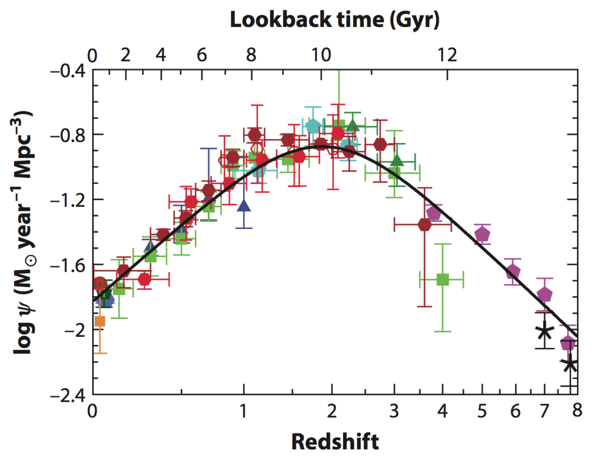
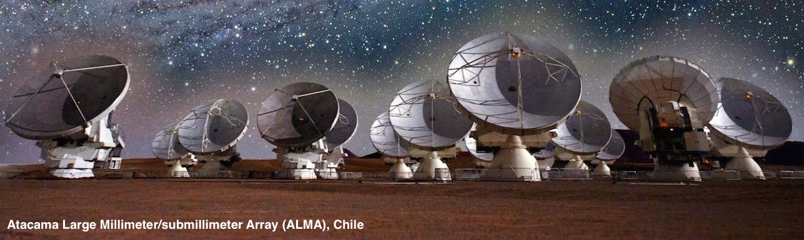
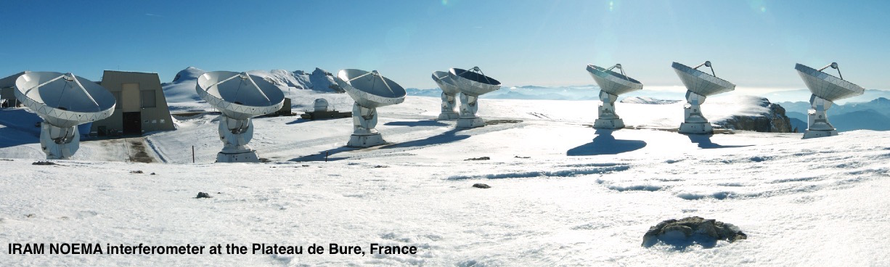
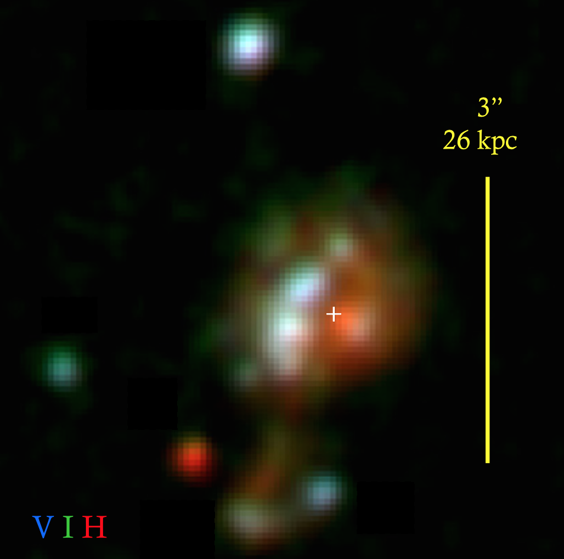
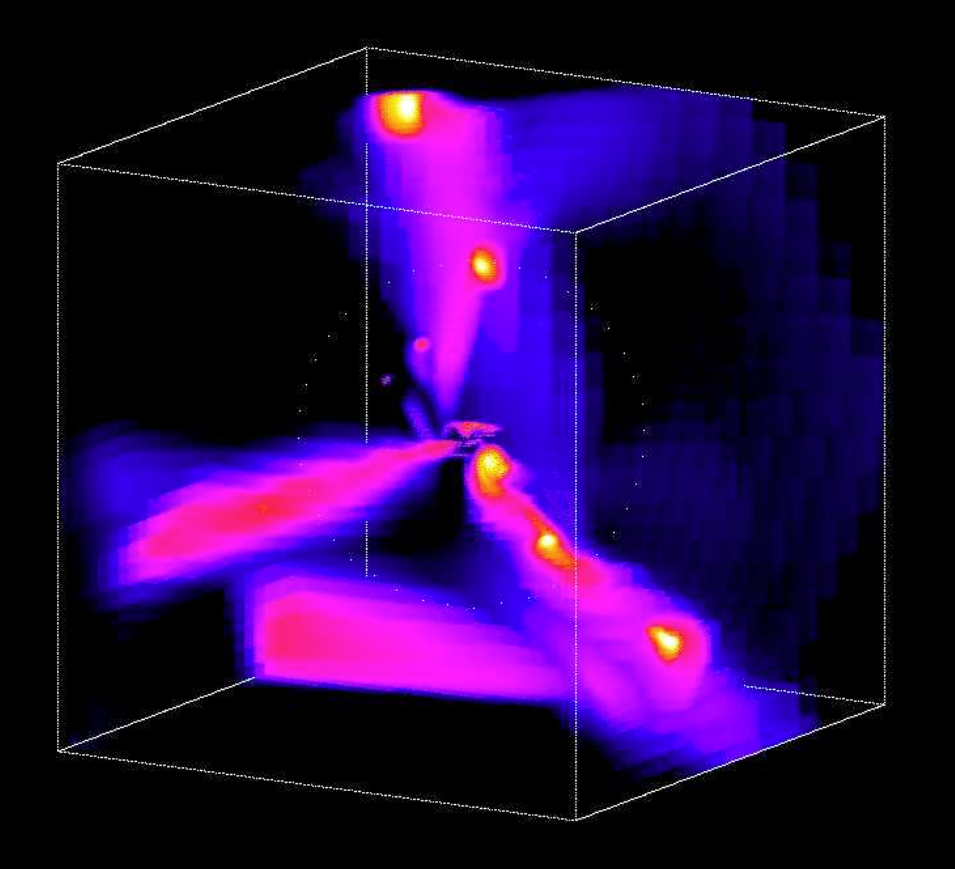
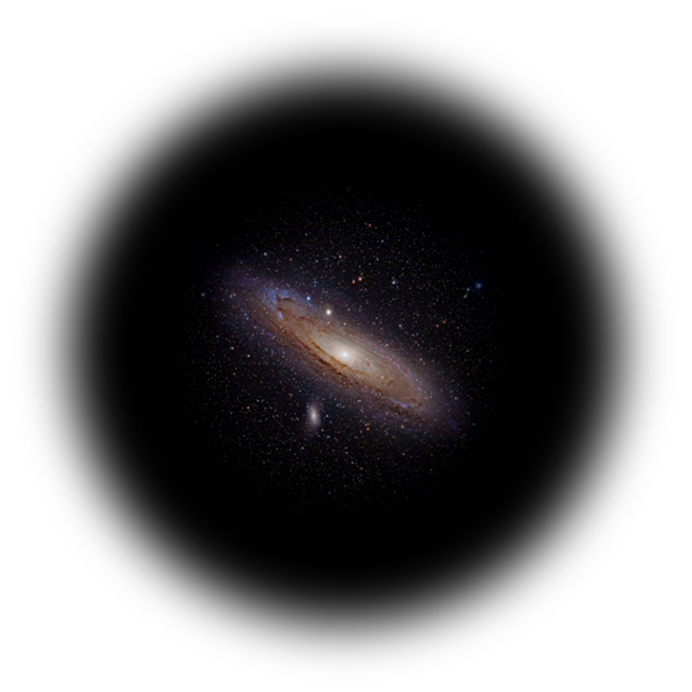
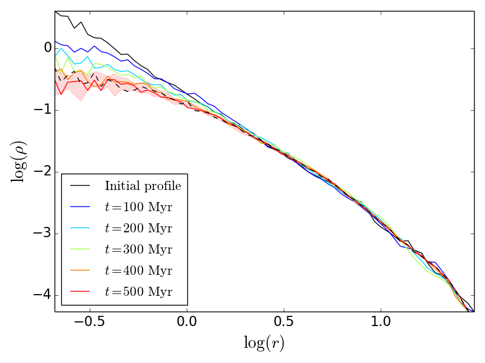
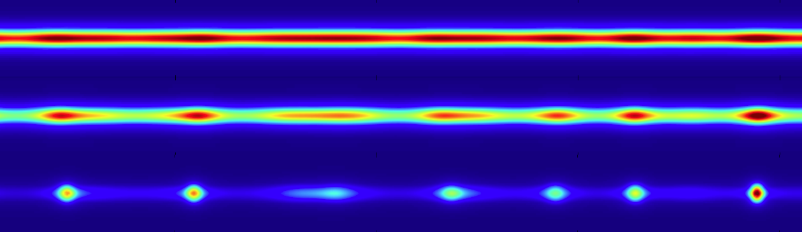

Star formation across cosmic time
Astronomical observations show that ten billion years ago, galaxies formed their stars much more rapidly than now. As stars are formed from cold molecular gas, this implies a significant gas supply and galaxies near the peak epoch of star formation are indeed much more gas-rich: the winding-down of star formation seems to be mostly due to the diminishing cold gas reservoirs. But the star formation processes could also have been different, and potentially more efficient, earlier in the history of the Universe...
To investigate star formation at different epochs, I am part of the PHIBSS and PHIBSS2 teams revolving around IRAM Plateau de Bure & NOEMA molecular gas observations within normal star-forming galaxies. I am also involved in observations at the Atacama Large Millimetre Array (ALMA).
For more details:
■ High-redshift star formation efficiency as uncovered by the IRAM PHIBSS programs (SF2A proceedings, 2014) ■ Star formation efficiency at high z and subgalactic scales (SF2A proceedings, 2013)
Relevent articles:
■ Genzel et al. (2015): Combined CO & Dust Scaling Relations of Depletion Time and Molecular Gas Fractions with Cosmic Time, Specific Star Formation Rate and Stellar Mass ■ Freundlich et al. (2013): Towards a resolved Kennicutt-Schmidt law at high redshift ■ Genzel et al. (2013): Phibss: Molecular Gas, Extinction, Star Formation, and Kinematics in the z = 1.5 Star-forming Galaxy EGS13011166 
The cosmic star formation history with its peak ten billion years ago (Madau & Dickinson 2014)The Kennicutt-Schmidt relation between the gas and star formation rate surface densities characterizes the star formation efficiency and suggests similar star formation processes at low and high redshift (Bigiel et al. 2008, Freundlich et al. 2013, Genzel et al. 2013).


Galaxies at the peak epoch of star formation
Galaxies near the peak epoch of star formation are not as regular as nearby galaxies: their rotating gas-rich disks are fragmented in a few star-forming clumps, are particularly turbulent and host violent gravitational instabilities which could contribute to their high star formation rates. Cycles of compaction, depletion and replenishment of the gas could maintain a relatively tight relation between their star formation rate and their stellar mass, until star formation eventually quenches. This quenching might be due to a combination of factors including gas removal by supernovae or active galactic nuclei winds, the shutting down of gas accretion onto the galaxy, a sudden drop in the gas cooling, a change in morphology and environmental effects.
Together with high resolution observations such as those obtained by ALMA, numerical simulations help better understand the evolution of galaxies and the quenching of their star formation.

EGS13011166, a clumpy star-forming galaxy at z=1.5 as seen by the Hubble Space Telescope (Genzel et al. 2013).
How do galaxies get their gas?
To sustain high levels of star formation, high-redshift galaxies require a significant gas supply, which can either be brought through major mergers of galaxies or through relatively smooth and steady accretion. Cold gas can notably penetrate deep inside galactic haloes along dense streams stemming from the filaments of the cosmic web. But these streams are prone to Kelvin-Helmholtz instabilities and could also fragment gravitationally: do they reach the galaxies' centers?
Relevent article:
■ Dekel et al. (2009): Cold streams in early massive hot haloes as the main mode of galaxy formation 
Gas streams from the cosmic web feeding a galaxy from the MareNostrum simulation (Dekel et al. 2009).
The influence of baryons on dark matter haloes
In the standard cold dark matter paradigm, each galaxy is assumed to be embedded in a diffuse dark matter halo. But while dark matter cosmological simulations predict steep 'cuspy' inner density profiles for these halos, observations favor shallower 'cores'. Feedback mechanisms from stars and active galactic nuclei (AGN) seem essential to resolve this discrepancy. Repeated gravitational potential fluctuations induced by stellar winds, supernova explosions and AGN could dynamically heat the dark matter halo and lead to the formation of a core.
We propose a theoretical model in which the potential fluctuations leading to core formation arise from feedback-induced stochastic density variations in the gas distribution and their dynamical effects are model as a diffusion process. This model provides a relatively simple parametrization of the cusp core transformation but should be further tested with hydrodynamical simulations and compared with other models.
For more details:
■ How baryonic feedback processes can affect dark matter halos: a stochastic model (SF2A proceedings, 2016)
Relevent article:
■ El-Zant et al. (2016): From cusps to cores: a stochastic model 
Artist's view of a galaxy surrounded by its dark matter halo (A. Evans, adapted by J. Freundlich & F. Ducouret).

Stochastic density fluctuations in the gas distribution of an initially cuspy halo leads to the formation of a core (El-Zant et al. 2016).
Star formation in the interstellar medium
The giant molecular clouds in which star are formed are not smooth, regular features: they are highly structured at smaller scales and host complex networks of overdense filamentary structures driven by turbulence. Most pre-stellar cores lie within these filaments. Does their cylindrical geometry affect core and star formation?
To investigate the growth of gravitational instabilities within filamentary structures, we consider idealized self-gravitating filaments and studied the dispersion relation arising from small perturbations within them. Such calculations might also be relevent for the filaments of the cosmic web.
For more details:
■ On the stability of self-gravitating filaments (SF2A proceedings, 2014)
Relevent article:
■ Freundlich, Jog & Combes (2014): Local stability of a gravitating filament: a dispersion relation Herschel reveals filamentary structures in the Aquila star-forming complex (Herschel "Gould Belt survey" Key Programme / P. André & D. Arzoumanian).

Fragmentation of an idealized self-gravitating filament as beads on a string (Freundlich 2015).